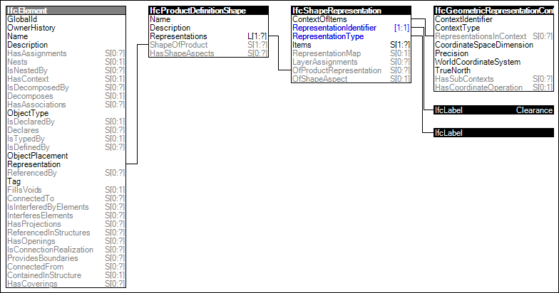

Link to this page
Link to this pageElements requiring surrounding space for clearance provide a 'Clearance' representation. The reason for clearance space may be due to ventilation, maintenance, or other purpose. Examples of such elements include boilers and chillers. Such representation may be used for interference checks, where the 'Clearance' representation must not intersect with the 'Body' representation of other objects, though may intersect with the 'Clearance' representation of other objects.
The representation identifier of the clearance representation is:
Figure 84 illustrates an instance diagram.
 |
Figure 84 — Clearance Geometry |